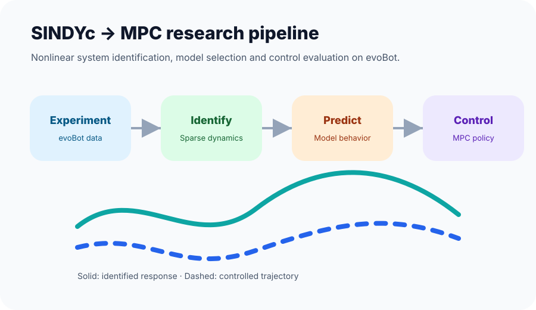

Master Thesis · Fraunhofer IML / TU Dortmund
Nonlinear System Identification and Control using SINDYc for MPC
A research project on identifying nonlinear dynamics using sparse methods and evaluating the identified model for Model Predictive Control on evoBot.
Summary
This master thesis focused on nonlinear system identification and control using Sparse Identification of Nonlinear Dynamics with control inputs, commonly known as SINDYc. The goal was to identify a compact and useful model from system data and use it within a Model Predictive Control workflow for evoBot.
Why it matters
In robotics and automation, control performance depends heavily on the quality of the model. SINDYc provides a data-driven way to discover governing dynamics while keeping the model interpretable enough for control design.
My contribution
- Structured the identification workflow from data collection to model selection.
- Worked with nonlinear dynamics and control-oriented modeling.
- Evaluated the approach on evoBot in the context of MPC.
- Completed the thesis with grade 1.7.
Technologies
System identification, SINDYc, Model Predictive Control, robotics, Python/MATLAB workflow, control evaluation and experimental data analysis.
Recruiter takeaway
This project shows my ability to connect research-level modeling with practical control engineering: data, model structure, controller design, validation and documentation.

Discuss this work
Want to know how this experience maps to your role?
I can explain the technical details, trade-offs and public-safe project context in an interview.